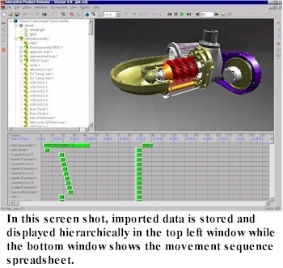
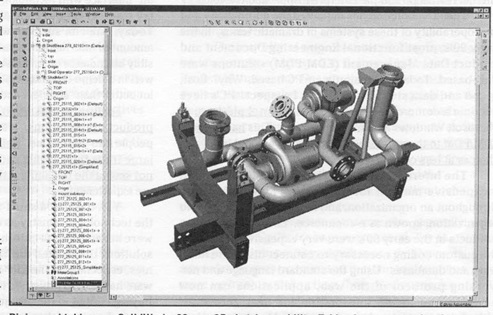
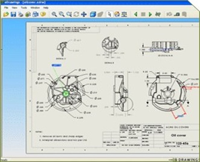
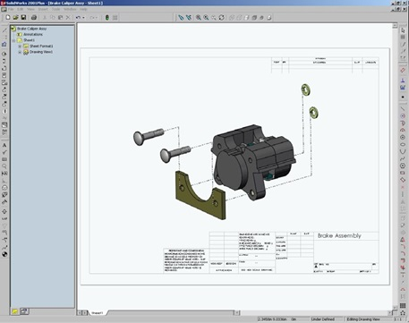
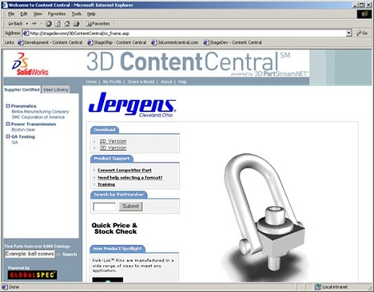

第18章：SolidWorks
SolidWorks是CAD行业中受一位名叫Jon Hirschtick的人的启发而诞生的公司。他在1983年从MIT获得了机械工程学士和硕士学位，随后在David Gossard博士领导的MIT CAD实验室工作。Hirschtick从小就有强烈的创业精神，甚至在高中时期也是一个自由职业者魔术师。在CAD实验室工作期间，他在1987年参加了一门创业课程，并与Axel Bichara合作撰写了一个名为Premise的新CAD软件公司的商业计划。当时，Bichara是一位来自德国的研究生，也在CAD实验室工作。 [1]
Premise的商业计划于1987年5月中旬提交，仅一个多月后，这两位创始人就从哈佛管理公司获得了150万美元的风险投资。这家公司在剑桥设立营业地点并开始了业务。 Jon Hirschtick
Premise的初始软件产品DesignView是一款在IBM兼容PC上运行，并与Microsoft软件包如Word和Excel进行接口的二维概念设计工具。用户可以勾画几何形状，分配约束并定义尺寸关系。如果尺寸发生变化，则设计将适应这些新信息。由于可以与Excel进行接口，因此可以使用电子表格来通过将特定尺寸链接到电子表格中的单元格来定义零件。DesignView售价1895美元/份。
虽然这款软件在其所做的方面很成功，但DesignView的市场规模对于Premise来说太小，因此后者无法繁荣发展。Computervision在1991年春季收购了Premise和DesignView软件，旨在将DesignView作为其自己的CADDS 5软件的概念前端进行市场营销。Hirshtick和Bichara都加入了Computervision的管理团队。 Bichara大约在一年后离开，回到欧洲，在法国丰特布洛的INSEAD学习MBA课程。接下来的几年里，Hirschtick留在Computervision公司，最初负责DesignView，并随后负责其他Computervision软件的产品定义。
作为温彻斯特设计公司的起步
Hirschtick在1993年8月离开了Computervision，没有明确的想法要做什么，除了想经营自己的公司。到1994年1月，基于实体建模技术创建低成本桌面设计系统的想法开始形成。Hirschtick组建了一个由Bob Zuffante、Scott Harris、Constantine Dokos、Tommy Li和自己组成的团队，开始开发最终成为SolidWorks的软件。
创始人们决定放弃早期的外部融资，并在大部分1994年里在家中无报酬工作。他们甚至购买了自己的PC用于软件开发。团队的一个关键成员是Michael Payne，他在1994年8月加入了该组织，负责整个软件开发工作。Payne曾是PTC的第三名员工，当他在几个月前由于管理纠纷而离开时，是开发副总裁。在PTC之前，他曾是Prime Computer的CAD开发主管。任何认识Hirschtick和Payne的人可能不能想象还有两个性格如此不同的人，但他们在接下来的六年里成功地共事。公司最初被称为温彻斯特设计系统，这个名字来自他们第一个真正的办公室的所在地。
随着Payne的加入，公司觉得是时候获得外部融资了。Hirschtick与回到波士顿的Bichara密切合作解决这个问题，后者在当地的风险投资公司Atlas Venture工作。为时不长，另外两个风险投资公司North Bridge Venture Partners和Burr、Egan、Deleage &Company加入Atlas Venture，三家公司共投资约450万美元。这项投资使公司继续运营到1995年底，当同一家风险投资公司以及Kubota和其他投资者投入920万美元时，公司得以继续发展。作为这项后期投资的一部分，Kubota成为了公司在日本的经销商。
另一个重要的招聘是Victor Leventhal，他于1994年10月加入公司。Leventhal曾在IBM担任长期的销售和营销工作，曾在20世纪70年代和80年代初管理10亿美元的部门，曾在Computerland管理1.2亿美元的直销业务，并在被Hirschtick招募前是CAD解决方案公司CAD Solutions的CEO。Leventhal的职责是担任行政总裁，建立与Autodesk经销商竞争的转售渠道。
正如在第16章讨论的那样，Parametric Technology Corporation成立于1984年，部分原因是因为它无需支持其竞争对手所做的遗留小型计算机和大型机软件。PTC从一开始就开发出可在网络化UNIX工作站上托管的Pro/ENGINEER。它的软件是用高级语言编写的，该系统利用了最新的软件架构技术。但即使是PTC，由于它承诺支持多个UNIX平台，它也受到使用特定于平台的操作系统代码实现用户界面和文件管理任务的限制。
Hirschtick的计划非常简单。SolidWorks只能在基于Windows的计算机上运行，公司计划尽可能利用标准的Windows功能来完成尽可能多的系统功能。结果是一个与Microsoft自己的应用程序，包括Word和Excel具有相同Windows外观和感觉的程序。这种方法显著减少了Payne和他的开发团队需要编写的软件代码的数量。此外，如果软件要在廉价的个人电脑上运行，则软件的价格必须相似。公司确定了初始发布价格为3,995美元。
根据1995年10月发布的《计算机辅助设计报告》：“这种CAD软件与其他软件的不同之处在于用户控制这些功能的方式。一旦您熟悉Windows程序的基础知识，创建和更改部件和装配件就比任何其他基于实体的系统更容易。”[4]
该策略还充分利用了个人电脑世界中正在发生的变化。Windows NT和Windows 95成为用户群体普遍接受的操作系统，英特尔微处理器的性能正在快速提高，而内存价格的下降速度更快。因此，内存较大且速度快的个人电脑变得经济实惠。
早期版本的SolidWorks
SolidWorks最初被称为Winchester Design，于1994年底开始向业内分析师和媒体展示SolidWorks软件的原型。我在1995年2月在芝加哥参加的国家设计工程展上第一次看到了这个软件。之后，Jon Hirschtick在1995年夏末亲自到Englewood，科罗拉多州的Engineering Automation Report办公室展示了最新的预发布版本。
Hirschtick在使用该软件建立单个零件模型方面做得很好，但当我要求他创建一个简单的装配件时，该软件未能配合。我始终无法确定是软件问题还是Hirschtick在SolidWorks的组装功能方面不熟练。
最初的 SolidWorks 开发采用了 Spatial Technology 的 ACIS 几何核心，但在软件发布之前，由于 ACIS 的性能问题和功能缺陷，公司转而使用了 EDS Unigraphics 的 Parasolid。EDS 还为 SolidWorks 提供了比 Spatial 更好的许可条款。
就在软件即将发布之前，PTC 对 SolidWorks 提起诉讼，声称后者违反了 PTC 员工的非竞争协议进行招聘。这可能会使 SolidWorks 停滞不前，但两家公司设法在造成太大损失之前达成了和解。这为两家公司之间的激烈竞争奠定了基础，这种竞争至今仍在持续。
SolidWorks 95 软件的正式发布是在 1995 年的 AUTOFACT 会议上。从一开始就毫无疑问，SolidWorks 的目标市场之一是考虑购买 Pro/ENGINEER 软件的公司。当然，另一家竞争对手是 Autodesk 和它的 AutoCAD 软件。（见第8章）。
SolidWorks 95 是一个基于特征、尺寸驱动的实体建模软件，可直接从实体模型生成二维图纸。与 Pro/ENGINEER 类似，对模型的更改会改变相关图纸，反之亦然。尽管第一版 SolidWorks 中包含了出人意料的 Pro/ENGINEER 类似功能，但还是存在一些区别。其中一些涉及建模功能，可能只是对部分潜在客户有影响，而另一些则更具战略性质。最初不支持国外绘图标准，这减缓了该软件在国际上的接受程度。
另一方面，SolidWorks 95 的最初实现包含了通常与更昂贵的高端系统相关的功能。这包括命名特定功能而不仅仅是编号、使用未完全约束的草图以及使用与重新组织文件夹或文件夹之间的Windows文件相同的技术重新排序功能。模型可以包含维度之间的代数关系，因此更改一个维度可以更改一个或多个其他维度。其他吸引潜在客户的新产品方面包括：
- 与Windows 95和Windows NT兼容的图形用户界面
- 自动应用约束的素描软件
- OLE 2.0支持的文件，用于与其他应用程序交换模型数据
- 基于D-Cubed软件的约束管理器
- 通过选择并拖动来重新定位特征的能力
- 用户可以使用BASIC编程语言创建自己的宏命令。
SolidWorks 95一经推出便迅速受到欢迎。大多数新软件产品初始版本都存在严重的功能缺陷和太多的错误，阻碍了有效的工作进展。然而，SolidWorks 95不然。根据Computer Aided Design Report的报告：“我们很高兴地报告，SolidWorks是我们见过的 CAD 软件产品的最佳首次发布之一。”该通讯还赞扬了该软件的建模能力，特别是其“特征管理器”，它使用户能够更改在SolidWorks术语中重新生成或“重建”模型的序列。用于创建设计的嵌套元素列表同时显示在屏幕侧面，同时也显示模型。
早期软件存在一些问题，特别是在装配建模和绘图制作方面。装配建模功能受到一定限制，如果粗心大意的话，可能会将一个零件插入到另一个零件中。绘图被认为是一个良好的开始，但存在一些需要解决的限制。《CAD Report》对中档电脑 overall 性能表示失望，特别是涉及下面描述的 PhotoWorks 的 photorealistic rendering。此外，文档（或文档缺乏）也是一个问题。这些大多数投诉都是期望随着软件的下几个版本来纠正的类型。
趁热打铁
SolidWorks 很早就向 CAD 工业明确表示，不会开发直销团队与其代理商竞争。这导致了一群高度承诺的经销商。同样，该公司表示计划专注于核心 SolidWorks 软件，不会开发广泛的应用程序。这个立场吸引了独立软件开发商，很快有许多人提供了与 SolidWorks 兼容的应用程序。在某些情况下，SolidWorks 将这些应用程序捆绑在其自身软件中出售，以软件包的形式出售，而在其他情况下，SolidWorks 采取了不干预的态度。
第一个应用程序之一是一款由英格兰谢菲尔德的 LightWorks Design 开发的 photorealistic rendering bao，名为 PhotoWorks。SolidWorks 以 795 美元的价格出售，或者客户可以以 4,390 美元的价格购买 SolidWorks 和 LightWorks 的组合。到 1996 年中期，SolidWorks 已经与 55 家第三方软件开发商签署了合作协议，其中 7 家已经发布了 SolidWorks 兼容的软件包。
这些合作伙伴中最具侵略性的之一是总部位于洛杉矶的结构研究和分析公司（SRAC）。SRAC由维克多·魏根哈根博士创立，是一个价格适中、易于使用且相当快速的有限元分析软件供应商，至少适用于小到中等规模的问题。SRAC重新打包了它的COSMOS FEA软件，使其能够直接与SolidWorks 96配合使用。称为COSMOS / Works，它在SolidWorks显示器的顶部添加了一个FEM菜单项。当选中该菜单项时，用户将退出SolidWorks，并进入专门针对SolidWorks模型数据工作的COSMOS版本。
用户可以从SolidWorks模型创建FEA模型，应用载荷和边界条件，分析零件并查看结果。两个程序具有相似的外观和感觉，符合Windows标准。这个实现的目的是设计工程师能够进行自己的应力分析，而不必涉及由使用高端FEA软件（例如ANSYS或MSC NASTRAN）的具有结构分析专业知识的部门人员在大型计算机上进行操作的情况。
这在工程界内引起了激烈的讨论，分析专业人士认为为缺乏足够培训的工程师提供这种功能是一个危险的前例，而这种方法的支持者认为现在可以分析比以前更多的零件，并在更多的条件下进行。这两种争论的观点可能都有一定的道理。
与SolidWorks本身一样，推动先进技术软件使用量增加的关键技术发展之一是计算机性能的快速增加，特别是台式电脑。到1998年末，许多工程师自己使用的计算机速度已达到400 MHz的Pentium II。这些机器能够分析曾经需要大型计算机才能完成的大型FEA模型。例如，SRAC的一个客户，尼克尔斯飞机公司，建立了一个具有130万自由度的喷气发动机润滑油泵的FEA模型。现代PC只需两小时即可完成分析。SolidWorks和SRAC共同改变了工程设计和分析的实践。
虽然SRAC与包括Intergraph和UGS在内的其他CAD供应商合作，但其与SolidWorks的关系可能是最为密切的，其软件的最紧密集成版本是COSMOS / Works。 COSMOS / Works 99将设计优化功能添加到该产品中，如图18.2所示。

SolidWorks 以快速的速度不断发展
SolidWorks 96 在1996年7月发布，修复了上述早期问题中的许多问题。特别是，装配建模得到了大幅增强。用户现在可以在装配模式下设计和编辑单个零件。通过使用户能够加载他们希望处理的模型子集，大型装配的性能得到了改善。通过提供用户更多控制单个视图的放置以及使用三种不同的线宽和多个文本字体，改进了绘图。
装配剖面比软件的初始版本工作得更好。文档得到了大幅改进，渲染性能也更加令人满意。仍然存在一些尚未解决的缺陷，如缺少重做功能以及错误地加载大型模型时无法停止长时间操作。
不到一年后，SolidWorks 97 推出，据公司称，该软件有175个增强功能。该软件的这个版本包含了许多增强功能，并纠正了与前两个版本有关的问题。将新的板金设计功能纳入基本软件包，还可以将凸起的文本添加到零件的平面表面上。薄壳对象现在可以有多个厚度。
SolidWorks也增强了软件的装配建模能力以及草图能力。虽然软件仍存在一些令人烦恼的问题，并且在线文档还有很多需要改进的地方，但在SolidWorks首次发布后的14个月里，它已经大大改进了。
实际上，功能的迅速增强开始引起一些行业分析师的关注。Steve Wolfe在《Computer Aided Design Report》1997年2月刊中谈到了这个问题。 “随着SolidWorks扩展其软件的能力，它存在使大多数设计师学习过于复杂的风险。 对于成本高昂且仅由经验丰富的专家使用的产品来说，这种复杂性可能是可以接受的，但对于试图扩大三维设计师基础的产品而言，这是行不通的。SolidWorks经理和用户需要考虑的另一个问题是哪些功能应该包含在基本产品中，哪些应该包含在特殊应用程序中。薄板金属设计的添加是一个很好的例子。并非所有产品都包含薄板金属。将薄板金属开发添加到基本产品中会使其变得更加复杂。在SolidWorks 97中，薄板金属设计控件很简单，不会妨碍使用。但是随着薄板金属设计师对更多自动化的需求，复杂性将增加，用户界面的杂乱也将增加。如果添加其他制造应用程序，则SolidWorks的复杂性将呈几何级增长。”[12]
同时，Parametric Technology Corporation和SolidWorks之间的口水战开始升温。正如第16章所讨论的那样，PTC的CEO Steve Walske不认为“中档” CAD解决方案存在实际市场。在1997年初的一次分析师会议上，Walske评论道：“低端产品存在缺陷，因为它们无法设计机械市场的有意义的部分。”[13]这可能在几年前是正确的，但到1997年，情况已经不同了。
达索系统收购SolidWorks
令所有未参与讨论的人感到惊讶的是，达索系统于1997年6月24日宣布以3亿美元的价格收购SolidWorks，约为公司年收入的12倍。在巴黎晚上的一次电话中，Jon Hirschtick提醒我，在不到两年前的1995年10月，我曾在工程自动化报告的第一篇文章中写道：“SolidWorks将对机械设计市场产生近十年来最重要的影响。”我从未想过这种影响会来得如此迅速。在过去的25年中，CAD/CAM行业进行了许多收购交易，几乎所有交易都涉及一个处于困境中的公司被更强的玩家收购。这是其中一个涉及两个强大公司合并的首批收购之一。[14]
在宣布收购时，SolidWorks已销售约6000份其软件。立即明确了收购的几个要点。首先，也是最重要的，SolidWorks将继续作为独立组织控制自己的产品开发策略。第二，SolidWorks软件包将由现有的经销商渠道销售，而不是由IBM销售达索的CATIA软件。第三，SolidWorks将继续与第三方软件供应商合作。十年后，这仍然是如此。
在CAD行业中，大多数收购的结果都从糟糕到可怕。以增加客户群为目的的收购通常被证明是一个错误。Dassault的收购SolidWorks似乎从一开始就很成功，因为两家公司之间几乎没有市场重叠，并且Dassault继续保持了这种情况。Dassault的CAD业务往往与像波音和克莱斯勒这样的大型工业公司有着长期的IBM关系，如第13章所述。而SolidWorks的客户群主要由那些在IBM的监测范围之外的较小公司组成。当时，Dassault没有Windows版本的CATIA，而这是SolidWorks所支持的唯一平台。此外，SolidWorks并没有像公司更专注于Pro/ENGINEER和AutoCAD，所以没有与CATIA竞争的思维意识。
虽然Dassault和SolidWorks之间有适度的技术共享，但在大多数情况下，公司的两个部分仍然独立发展。即使在Dassault收购Spatial及其ACIS技术的2000年之后，SolidWorks仍然使用Parasolid几何核心。财务管理等核心业务功能被集中管理，而客户相关活动，包括产品内容和方向，则是独立管理的。
与Autodesk的竞争
1998年初，SolidWorks和Autodesk之间也开始了更激烈的营销战。总的来说，SolidWorks在技术和营销方面都很成功，而Autodesk则在努力理性化其机械产品策略。在Vic Leventhal的领导下，SolidWorks建立了一个令人印象深刻的分销渠道，其中许多经销商曾经或目前是Autodesk的经销商。
Autodesk在1998年初宣布，被授权销售Mechanical Desktop的经销商不得销售竞争产品，特别是SolidWorks。随后，包括U.S. CAD和Micro Engineering Solutions在内的几家重要代理商被Autodesk终止了关系。 与此同时，SolidWorks在1998年2月成为OpenDWG联盟（今天称为The Open Design Alliance）的创始成员。这个行业团体的目的是提供软件工具，以Autodesk的内部DWG格式直接读写AutoCAD文件。 Autodesk从未公开发布DWG格式的详细说明。因此，在与联盟签订合同的程序员被迫反向工程文件格式。通过加入联盟，希望主要能够快速读取AutoCAD文件的Autodesk竞争对手，可以在该领域汇集他们的开发资源并消除冗余开发工作。第三方软件是SolidWorks战略的关键。
未来几年，SolidWorks每年提供一次新软件版本。大多数情况下，公司专注于其核心建模和绘图技术，将分析、NC和PDM等应用留给第三方供应商。例如，甚至先进的曲面建模软件也可从外部来源获得。缅因州西南港的Aerohydro提供一个名为Surface Works的程序，最初是为支持该公司的船舶设计活动而开发的。另一个例子是位于马萨诸塞州阿克顿的Immersive Design。Immersive于1995年由Greg Smith创立，提供一个名为交互式产品动画师或IPA的动画和可视化包，如图18.3所示。

SolidWorks建立了其黄金合作伙伴计划以促进这些第三方应用程序的发展。目的是为应用程序和SolidWorks软件本身之间提供一致的外观和感觉。例如，CosmosWorks结构分析软件对用户来说只是SolidWorks的一个扩展。如果用户想要旋转FEA模型，他/她使用的是用于旋转SolidWorks模型的相同下拉菜单。通过这种方式，SolidWorks能够以与其大型竞争对手和达索系统类似的通用用户界面呈现其软件及其黄金合作伙伴的集成解决方案。
在NDES ‘97上，ANSYS展示了其新的DesignSpace应用程序，将其FEA程序包装在SolidWorks兼容的Windows界面中。四步“它会断裂吗？”向导通过在过程的输出中提供绿色标志（好）或红色标志（重新开始）来简化设计工程师的分析过程。
尽管SolidWorks具有相当好的制图功能，但该公司于1997年4月与Adra Systems签订协议，将该公司的Cadra制图软件添加到其支持的第三方软件列表中，以及Adra的PDM软件MatrixWorks的定制版本。几个月后，Adra Systems分为两个公司，原始的Adra Systems继续销售Cadra制图软件，MatrixOne接管Matrix PDM软件的开发和销售。2006年，MatrixOne被达索系统收购。
SolidWorks成为一个严肃的设计软件包。
好的软件架构之一的衡量标准是在不影响性能和可靠性的情况下增强重要软件包的速度。多年来，看着SolidWorks的演变似乎证实了其潜在架构的质量。1998年初发布的SolidWorks 98增加了许多增强功能，以便更轻松地创建复杂几何图形、绘图和装配建模。后者是大多数CAD供应商仍在努力应对的一个问题，特别是关于复杂装配的初始加载和显示。SolidWorks 98可以几乎瞬间显示一个由150个组件组成的装配体。截至1999年初，SolidWorks已经安装了超过20,000个SolidWorks座位，并开始追求1,000座位的交易。尽管达索没有公布SolidWorks具体的财务结果，但工程自动化报告估计SolidWorks每年的业务额为4000万至5000万美元。
该公司建立了一个主要账户团队，以追求这些大交易。这些团队负责协调经销商、第三方软件公司和硬件供应商的活动，但实际的购买仍然是通过经销商指导的。SolidWorks为经销商创造了比其他软件供应商（如PTC和Autodesk）更积极的商业环境。SolidWorks 99的中期发布包括一个新的三维素描功能，可促进引入一个定价为995美元/份的新管道模块。

该公司在1999年售出了超过17,000个商业版SolidWorks，到新世纪开始时已经达到了约43,000个座位。SolidWorks 99在2000年初推出，具有改进的零件建模和绘图，并加快了总装查看速度。由于这些系统上开发的模型越来越大，虽然计算机功率也在不断提高，但在软件层面上仍然有很多工作要做，以使总装建模不会陷入失效状态，用户尤其关注改进的总装查看速度。
客户和潜在用户没有看到任何将SolidWorks和CATIA，特别是新的CATIA V5融合成一体化解决方案的努力。每个系统保持其自己的发展重点，销售似乎针对不同的市场细分。
管理变革开始
1999年春季，SolidWorks的研发执行副总裁Mike Payne成为达索系统的技术执行副总裁。SolidWorks的研发管理被分为两个部分：David Corcoran接管了位于马萨诸塞州的研发小组，而Linda Lokay则负责另一个独立的研发团队，位于英国剑桥。大约在同一时间，达索收购了以色列公司Smart Solutions的75%股权，该公司推出了一款名为SmarTeam的PDM系统。虽然这个软件包非常适合SolidWorks的用户，但是这两个达索子公司仍然是独立运作的。SolidWorks版本的SmarTeam被称为SmartWorks。
到1999年底，SolidWorks已经成为了一个非常全面的几何建模工具，并具有相当的组件建模能力。自从首次发布以来不到五年的时间，这个软件在许多方面与更长时间存在的更昂贵的软件产品相媲美。公司现在已经足够大，可以成为一批新一代初创企业的招聘目标。
这种新的成熟的一个例子是SolidWorks在2000年3月获得的对Alibre公司的临时限制令。该限制令阻止这家相对较新的CAD公司招募更多的SolidWorks员工。在发布禁令之前，Alibre曾吸引了Tom Kopinski，SolidWorks的前北美销售总监，成为其销售副总裁。Kopinski和其他SolidWorks员工一样，与SolidWorks签有禁止其加入竞争对手的就业合同。正如前面提到的，SolidWorks曾涉及过类似的法律案件，当时PTC抱怨SolidWorks挖走了其员工。在2000年中期，达索收购了来自Spatial Technology的实体建模组件软件业务，包括ACIS建模内核。许多人都期望SolidWorks从Parasolid转向ACIS，因为Parasolid由SolidWorks和CATIA的竞争对手控制。
eDrawings
很可能从20世纪80年代中期开始，CAD倡导者就提出了废除传统工程图纸，改用模型图像和数字数据进行建造和制造。这些先驱大多数人领先于他们的时代，但是逐渐，绘图开始被数字模型数据取代。到了20世纪90年代末期，设计团队向正在制造模具、模型和其他零部件的公司提供数字模型数据，支持有限数量的二维绘图已经不再是稀罕事儿了。例如，复杂的曲面很难在工程图纸上准确定义，但是使用本地数据或者用诸如IGES和STEP这样的行业标准格式之一在系统之间传输很容易。但是仍然需要绘图，只是它们应该变得更加有用。
1999年末，SolidWorks推出了一种新型的计算机生成绘图技术，称为“eDrawings”。如图18.5所示，eDrawings源于三维模型，但不仅包含二维数据，还携带底层模型信息。eDrawings有两个版本，一个包括查看软件作为绘图文件的一部分，另一个假定接收方在要查看绘图的计算机上加载了查看软件。显然，后者的文件更紧凑。
SolidWorks免费提供了查看软件和创建eDrawings所需的软件，尽管有一些考虑收费的发布软件，称为eDrawings Professional。最终，该公司扩展了此功能，将包括AutoCAD、Inventor、Pro/ENGINEER、Solid Edge、Unigraphics以及Dassault旗下的CATIA V5等竞争系统生成的绘图。
SolidWorks eDrawing

SolidWorks达到了成熟期
SolidWorks 2001年可能为这个迅速发展的产品定义了一个新的成熟水平。这个版本标志着对用户界面的一种新的方法，SolidWorks的营销人员称之为“头顶用户交互”。根据Engineering Automation Report的说法：“沿着在SolidWorks99中开始的趋势，他们几乎消除了所有的对话框。例如，在挤压实体时，您现在可以直接在屏幕上分配值，相邻于被挤压的实体上。 PropertyManager现在已经在整个程序中实现，并添加了上下文敏感的提示。后者出现在模型或绘图显示中，以协助设计师。上下文敏感的提示包括象征性的草图关系提示以及描述和可编辑的特征提示，显示适当的设计信息，允许用户更好地理解和更轻松地修改设计。这些提示显示与草图实体关系、特征输入的标签或更改特征参数的方法等信息。”
2001年底，达索收购SolidWorks的前景非常好。2001年11月，在该公司位于马萨诸塞州康科德的总部为媒体和分析师召开的会议上，SolidWorks的高管们对公司取得的成就感到满意，并对未来充满乐观情绪。根据人们如何评估这些数字，SolidWorks可以声称是中档三维CAD市场的领先供应商之一，超过了Autodesk在这一领域声称的收入。
会议的基本主题是，SolidWorks追求的目标市场远未饱和，设计组织中仍在使用二维工具的三维设计软件的需求仍然很大。
会议上，Hirschtick和其他SolidWorks参与者强调，SolidWorks基本上是一家CAD公司，致力于生产最好的设计软件，并不是PLM公司。2001年的销售额比2000年增长了20％，其中70％的收入来自新客户。与竞争对手相比，这是一个极高的数字。例如，PTC的90％收入来自其已安装的基础设施。
SolidWorks声称，其50％的新业务来自现有的Pro / ENGINEER客户账户。此时，SolidWorks已售出超过160,000个软件许可证，其中88,000个许可证为商业账户，其余的为教育机构。到年底，SolidWorks占达索系统收入的比例仅略低于20％，而当收购时仅为2％。
所有大型软件公司的一个主要问题是如何确定在研发资源上投资的位置。用户组心愿清单和焦点小组可以提供帮助，但不能完全解决问题。SolidWorks使用了一种有趣的软件工具来帮助收集用户信息。该工具可以由用户选择性地启动，目前大约有5％的用户这样做了。该软件收集有关单个用户执行的功能，软件活动频率和用户遇到的问题的信息。这些信息每两周通过电子邮件发送给SolidWorks，不包括任何客户特定的数据。一个有趣的统计数字是，2001年每个SolidWorks许可证每年使用550小时，而2000年是450小时。不仅有更多的许可证在使用中，而且每个许可证的使用强度也增加了。
变革的卫士
CEO Jon Hirschtick决定下台后的几天，公司宣布了这一消息，时间是2001年11月9日。
约翰·麦克唐纳被提拔为SolidWorks的首席执行官，之前他是公司的首席运营官。此次更换领导并不完全出乎意料，因为在之前的三个月里，之前的CEO Hirschtick已经休假了，期间麦克唐纳一直在负责公司的运营。Hirschtick做出这个决定有两个因素：个人和家庭原因以及希望将公司的管理团队“继续实现公司过去八年所取得的惊人成功”。此外，Dassault Systèmes公司的母公司还任命Hirschtick为SolidWorks的执行委员会成员，继续担任SolidWorks的董事会成员。总的来说，此次更换领导对公司运营来说是有益的。
同年12月，SolidWorks发布了其第十个主要软件版本SolidWorks 2001 Plus。新增的重要功能是使用D-Cubed的Assembly Engineering Manager软件，使用户能够模拟实体组件之间的真实运动。SolidWorks 2001还加入了新的拼装设计功能，能够更好的满足用户的设计需求。此外，图纸功能也进行了增强，具体如图18.6所示。

SolidWorks的主要营销策略是需要二维制图软件（特别是AutoCAD）的用户转向三维模型中心设计。直到SolidWorks 2001 Plus，公司没有做过多实际帮助客户进行转换的工作。SolidWorks 2001 Plus增加了几个工具，可促进将二维图纸转换为三维模型。实际上，用户可以将每个二维视图放置在围绕隐含的三维模型的想象玻璃箱的适当侧面上。然后可以使用一组软件工具从这些视图中实际构建模型。软件的一个好处是，随着模型的旋转，投影视图也跟着移动。
SolidWorks跳入PDM战斗中
到2002年6月，很明显达索系统收购Smart Solutions的效果不如预期。一些SmarTeam员工被调往达索的Enovia子公司，一些被调往达索的专业服务机构，还有一些被调往SolidWorks。尽管公司继续向其他CAD解决方案的用户销售SmarTeam，但其中的大部分工作由SolidWorks负责，通过现有的经销商渠道营销SmarTeam。很明显，对于SolidWorks的中等和大型用户来说，SmarTeam是首选的PDM产品。
SolidWorks安装基数的相当一部分是仅有几个SolidWorks副本的安装。为了满足这些客户的需求，SolidWorks收购了一家小型私有公司Design Source Technology，该公司推出了一款简化的PDM软件包PDMWorks。它价格便宜，适用于安装了两到五个CAD软件副本的安装。它不使用关系型数据库管理程序，如Oracle或Microsoft SQL，而是使用Windows操作系统的基本文件管理功能来维护模型和图纸数据。
逐渐接近中期的SolidWorks。
2005年2月初，SolidWorks在佛罗里达州奥兰多举行了年度用户会议，共有超过2,200名与会者。该公司在计算机辅助设计市场上所带来的影响力表现在于，77家公司在会展区设立展位展示与SolidWorks兼容的产品。此外，SolidWorks还成功请来了太空先锋伯特·鲁坦作为会议的主题演讲人。他描述了如何使用SolidWorks软件和其他设计工具构建了第一艘私人融资的载人航天器——SpaceShipOne。
到2005年中期，SolidWorks已经安装了大约19万个商业软件许可证，年收入约为2.25亿美元。SolidWorks公司的收入占母公司整体收入的21%以上，显然也是公司利润更大的一部分。很明显，达索公司在1997年收购该公司是一个明智的决定。达索一直保持了管理SolidWorks子公司的“不干涉”态度。实际上，在SolidWorks和CATIA产品之间几乎没有任何联合营销，而且公司只提供有限的可供两个系统之间数据交换的软件。
由于该公司积极的教育计划，为学校提供了大幅度折扣的SolidWorks软件，所以安装基数总共接近400,000个许可证。该公司声称，每年有超过700,000名学生学习使用该软件。
SolidWorks 3D Content Central实现了许多计算机辅助设计先驱多年来梦想的概念。大多数产品由制造商设计的一些部件和大量从外部供应商采购的部件组成。在设计过程中，这些外部部件的尺寸数据需要被整合到产品模型中。历史上，这是一项耗时的手工任务。
通过3D Content Central，零部件供应商能够创建SolidWorks兼容的组件模型，并将其发布在由SolidWorks管理的网站上。设计工程师可以下载这些数据并将零件信息融入到他们正在设计的产品中。截至2005年中期，SolidWorks用户每月下载近10万件零部件。

另一个有趣的进展是非SolidWorks用户接受了eDrawing技术。超过32,000名Pro/ENGINEER用户已注册使用这项技术。
当时SolidWorks的管理层包括：
- 约翰·麦克伦尼 - 首席执行官
- 杰夫·雷 - 首席运营官
- 约瑟夫·埃斯波西托 - 首席财务官
- 克里斯·加西亚 - 研发副总裁
- 贝特朗·西科特 - 北美销售副总裁
- 戴夫·科科伦 - 战略执行副总裁
- 米歇尔·格罗 - 欧洲执行副总裁
- 藤井冬彦 - 总裁兼CEO，SolidWorks Japan K.K.
- 维德·纳拉扬 - 亚太区运营副总裁
- 莱纳·高利克 - 全球市场副总裁
- 理查德·韦尔奇 - 全球客户服务副总裁
在2007年7月，John McEleney宣布退休计划，Jeff Ray被任命接任他的职位。
[1] Bygrave, William D. and D’Heilly, Dan – editors, The Portable MBA in Entrepreneurship Case Studies, Pg. 81
[2] http://www.cs.technion.ac.il/news/2005/119/photos/11/
[3] Computer Aided Design Report, December 1988, Pg. 12
[4] Computer Aided Design Report, October 1995, Pg. 5
[5] I did some consulting for SolidWorks about this time, particularly putting together a white paper that put forth the proposition that SolidWorks was the natural evolution of CAD software.
[6] Computer Aided Design Report, October 1995, Pg. 5
[7] Engineering Automation Report, October 1995, Pg. 6
[8] Computer Aided Design Report, April 1996, Pg. 3
[9] , March 1996, Pg. 12
[10] , November 1996, Pg. 7
[11] Computer Aided Design Report, August 1996, Pg. 7
[12] Computer Aided Design Report, February 1997, Pg. 3
[13] , February 1997, Pg. 3
[14] Engineering Automation Report, July 1997, Pg. 1
[15] Engineering Automation Report, March 1998, Pg. 12
[16] Engineering Automation Report, July 1999, Pg. 11
[17] Computer Aided Design Report, April, 2000, Pg. 15
[18] Engineering Automation Report, December 2001, Pg. 1
[19] SolidWorks press release, December 9, 2001
[20] Engineering Automation Report, December 2001, Pg. 3
[21] Engineering Automation Report, December 2001, Pg. 5